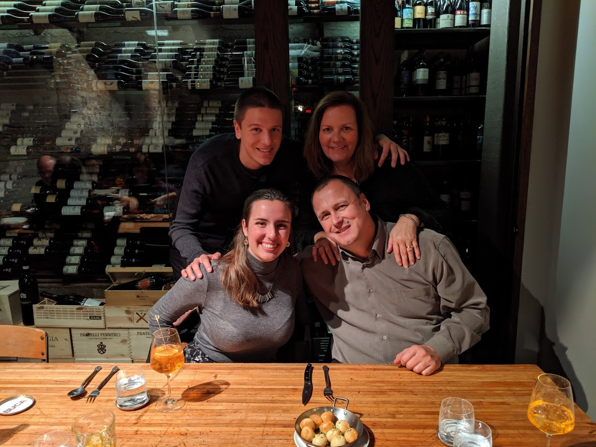
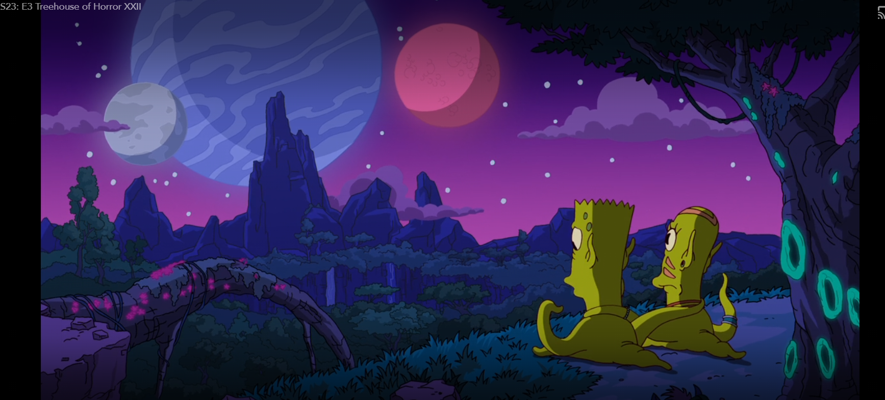

Entry 3
The Grass is Singing
October 18th, 2020
I’m wary about reading another novel by Doris Lessing because last semester I read her novel The Good Terrorist and I hated it to my core. But I know going into The Grass is Singing that I hated The Good Terrorist because I loathed its protagonist. Hopefully this novel’s protagonist will be someone whose perspective is a little bit more palatable, and who isn’t just an absolute dunce. Maybe she’ll be less of an asshole to the people who love her, too.October 29th, 2020
So, I was wrong. Mary in The Grass is Singing is like The Good Terrorist’s Alice in that she is a woman with an unpalatable perspective who also happens to have intense anger issues. They are also both childly innocent about sex. And while Mary’s blatant racism made me more uneasy than Alice’s terrorism, but overall, Mary was more bearable than that abominable Alice. Mary is a product of her culture, of her upbringing, and she is struggling with depression because she is trapped by the holy bonds of matrimony in a crummy situation. I can excuse Mary, or at the very least soften her edges. Alice was such a parasite on her family and the people she loved, she became a terrorist just for the fun of it, really, and she is the epitome of thoughtlessness. I hate Alice. Mary is tolerable.Having read two books of Lessing’s with vapid, raging, weak, grotesquely innocent female protagonists, I’m shocked people could get past the surface-level anti-feminism of her character’s personalities and find the feminist gems buried in her novels.


Entry 2, Part 2
Decolonization
October 19th, 2020
Tonight at dinner I asked my family – my mom, my dad, and my (triplet) brother – if anyone would like to proofread a paper on decolonization. I was addressing my dad, because he always reads my papers, but my mom seemed quite interested in the subject. We got to talking about colonialism, mainly that of First Nation’s people in Canada. My brother went on a little tangent on how he, a Criminal Justice and Public Policy student at the UoG, took a Canadian Law and Society course that focused a great deal on Indigenous issues in Canada. The four of us talked about residential schools and their effects on Indigenous culture, and I called the missionaries white saviours. Of course, the Criminal Justice student mentioned the disproportionate amount of Indigenous people in our prisons, and my dad compared it to the disproportionate amount of black people in American prisons. My brother asked if we thought the BLM movement was related to slavery, because he didn’t see the connection, and I made a compelling argument about how they are most definitely intertwined. We circled back to Indigenous people in Canada, and our conversation ended with conversation about the drama with the Mi'kmaq fishers. When dinner ended we all kind of sat there looking at each other in awe. We were doing that during the discussion, but no one mentioned anything for fear of breaking the spell we seemed to be under. My mom remarked that she was so impressed with our discussion, and we all agreed. We had thought experiments, debates and discourse, arguments and counterarguments; we built off each other’s ideas and we explored different ideas. It was amazing! It felt like an in-class discussion, and it made me miss in-person classes so much. And it was all because I wanted to guilt my parents into proofreading my midterm! (Which they both did!) Note, this photo was taken last year at a resturant #throwback.
Entry 2, Part 3
Indigenous Futurism
October 29th, 2020
Last night I watched The Simpsons Treehouse of Horror XXII , which was a spoof of the movie Avatar. It was in that moment that I realized how deeply tied with colonialism Avatar is. (In my defense, I hadn’t seen it since I was like, 10). I recently watched a documentary for my British Imperial Lit class on King Leopold’s Congo colony and the atrocities he committed to harvest rubber and I saw great parallels between that moment in history and the Avatar parody. Then I thought to myself, why aren't we learning about Avatar in the post-colonial literature class? I think that text would be very interesting to see again now that I know more about imperialism/colonialism. Furthermore, we can link it to other texts discussed in the class! Mary and Moses’ relationship in The Grass is Singing could be likened to that of Jake and Neytiri, and Jake’s interactions with the Na’vi could be likened to Mr. Brown’s interactions with the Ibo tribe in Things Fall Apart.